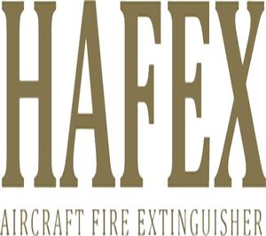

Trade Mark Journal No.2026/010 6 March 2026
WO0000001903203 (9)
Office of origin: Turkey
Date of International Registration:12 August 2025
Date of designation in the UK:
12 August 2025

International priority date claimed: 18 April 2025
(Turkey)
- Class 9
- Measuring instruments and devices, including those for scientific, marine, topographic, meteorological, industrial and laboratory use; non-medical thermometers, barometers, ammeters, voltmeters, hygrometers, testers, telescopes, periscopes, binoculars, magnifiers, compasses; vehicle indicators; laboratory apparatus and instruments; microscopes, laboratory apparatus and instruments; devices for recording, transmitting or reproducing sound and images; cameras, photo cameras, televisions, videos, CD-DVD recorders and players, MP3 players and remote control devices used with them, computers, desktop-tablet computers, wearable technological devices being smartwatches, smart wristbands and virtual reality headsets, microphones, speakers, headphones; devices and computer peripherals for communication and reproduction purposes; mobile phones and their cases, mobile phone screen protectors; landline phones, telephone switchboards, computer printers, scanners, photocopiers; magnetic, optical record carriers and computer programs and software recorded on them; electronic publications, mobile applications, crypto currencies (software), unchangeable tokens (Qualified Intellectual Property Title Deeds) that can be downloaded via computer networks and recorded on magnetic and optical media; magnetic/optical reader for cards, magnetic, optical, and electronic data media recorded motion pictures, series and video music clips; antennas, satellite dishes, amplifiers and parts thereof; ticket dispensing terminals, electronic; cash dispensing machines; electronic components used in machines; semiconductors, electronic circuits, integrated circuits, chips, diodes, transistors, magnetic heads and electric converters; electronic locks, photocells, electronic opening and closing mechanisms and remote control devices used as parts of these, sensors; counters and timers that measure the amount of consumption per unit of time; protective clothing, protection and life-saving equipment; eyeglasses, sunglasses, lenses and their boxes, cases, parts and accessories; electrical apparatus for the transmission, conversion, and storage of energy for use with control devices and tools; plugs, junction boxes, switches, circuit breakers, fuses, ballasts, starters, electrical panels, resistors, sockets, transformers, adapters, chargers, electricity, cables used in electronics, batteries, accumulators, solar panels for electrical energy production, charging stations for electric vehicles; devices whose main function is to warn and alarm (excluding vehicle alarms), electric bells; signaling devices and LED vehicle traffic signals; fire extinguishing tools and equipment, including fire extinguishing vehicles (including fire extinguishing hoses and fire extinguishing valves); radars, submarine radars (sonars), night vision apparatus and instruments; metronomes; artificial intelligence humanoid robots, laboratory robots, educational robots, security monitoring robots.
YG YANGIN GÜVENLİĞİ SANAYİ VE DIŞ TİCARET LİMİTED ŞİRKETİ